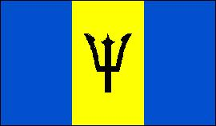

Barbados
|  |  |
Información General
Nombre oficial: Barbados
Área: 430 km²
Costas: 97 km
División política: 11 parroquias
- Christ Church
- St. Andrew
- St. James
- St. John
- St. Joseph
- St. Lucy
- St. Michael
- St. Peter
- St. Phillip
- St. Thomas
Unidad monetaria: Dólar de Barbados
1 Dólar de Barbados = 100 centavos
Idiomas: Inglés (oficial); algunas comunidades de origen extranjero hablan también hindi y griego (no oficiales)
Fiesta nacional: 30 de noviembre, Día de la Independencia
Gentilicio: Barbadense
Hora oficial: GMT -4 horas (normal/verano)
Miembro de: ONU, Commonwealth, CARICOM, OEA
Curiosidades
Barbados es la más oriental de las islas del Caribe.
Perfil Ecónomico
Perfil Demográfico
Población: 279.912 hab.
Densidad de población: 642 hab/km²
Fuente: http://www.barbados.gov.bb/geography.htm
Perfil Cultural
Alfabetismo: 98 %
Religión:
- Anglicanos: 46,0%
- Protestantes: 30,0%
- Católicos: 8,0%
- No religiosos: 7,3%
- Otras religiones: 6,7%
Sistema de Gobierno
Constitución vigente: 30 de noviembre de 1966
Sistema ejecutivo: Monarca británico (Jefe de Estado, representado por el Gobernador General), Primer Ministro (Jefe de Gobierno, nombrado por el Gobernador General), gabinete (responsable ante el Parlamento).
Sistema legislativo: Senado (veintiún miembros, nombrados por el gobernador general) y Asamblea (veintiocho miembros, electos por sufragio popular para cinco años).
Sistema judicial: Corte Suprema, Corte Superior y Corte de Apelaciones. Existen cortes para delitos menores.
Aproximación histórica
Barbados es la más oriental de las islas del Caribe. Su relieve es plano con elevaciones suaves. El punto más elevado es el monte Hillaby con 340 m de altura.
La historia antigua de esta isla es incierta. Se supone que estuvo habitada por indios arawakos, originarios de América del Sur. Los españoles encontraron la isla deshabitada al desembarcar en 1518 y la abandonaron. A principios del siglo XVII, los hermanos Powell establecen una colonia inglesa y traen esclavos de Africa para trabajar en las plantaciones de caña de azúcar. La esclavitud es abolida en 1834.
Ya en el siglo XX, el país atraviesa disturbios generalizados entre 1937 y 1938. El sufragio general es establecido en 1951 y el Partido de Trabajadores de Barbados (PTB) gana las elecciones de 1958. Barbados participa en la Federación de las Indias Occidentales a partir de ese año. La Federación es gradualmente disuelta entre 1961 y 1965 y en 1966 Barbados se convierte en un Estado Independiente dentro de la Comunidad Británica (Commonwealth). En los últimos años, el gobierno ha intentado diversificar la economía, basado en el turismo, con el incentivo de la explotación de petróleo, la implantación de pequeñas industrias y la transformación de Barbados en un centro financiero.
«-- ir al comienzo«-- regresar